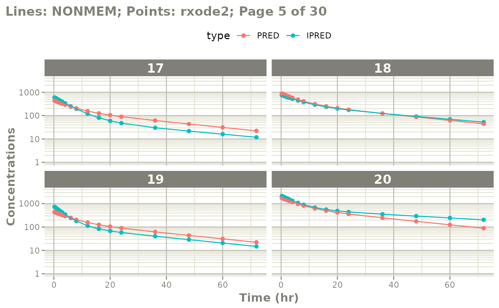
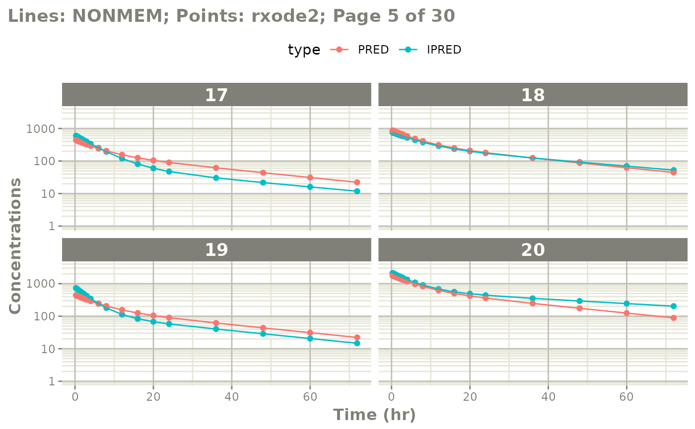
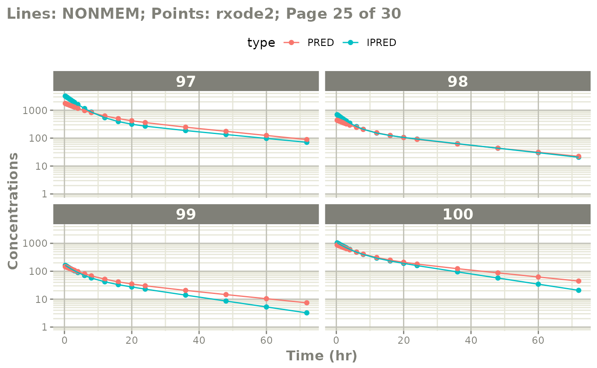
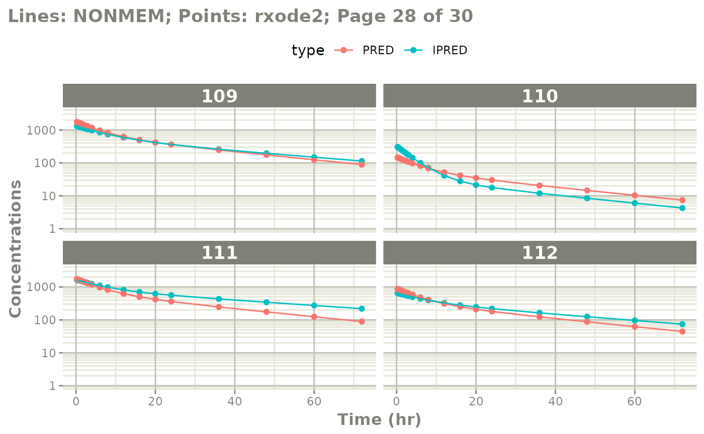
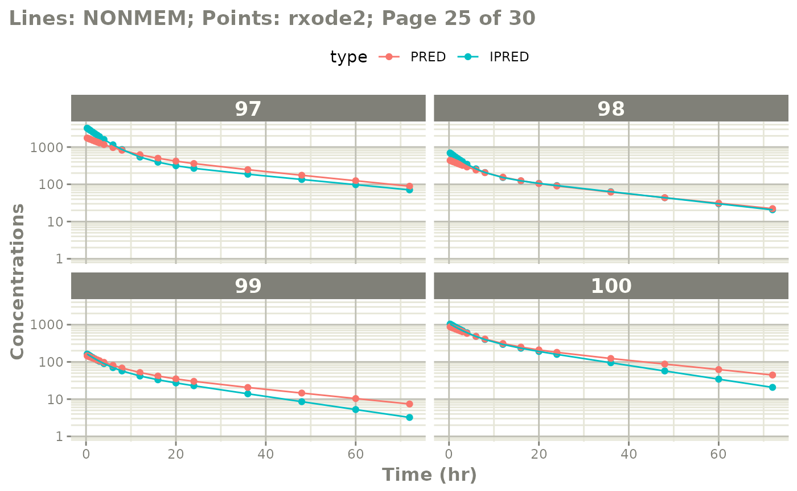
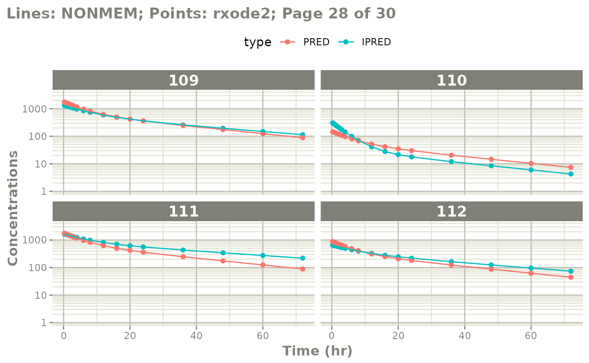

library(nonmem2rx)
mod <- nonmem2rx(system.file("mods/cpt/runODE032.ctl", package="nonmem2rx"), lst=".res", save=FALSE)
#> ℹ getting information from '/home/runner/work/_temp/Library/nonmem2rx/mods/cpt/runODE032.ctl'
#> ℹ reading in xml file
#> ℹ done
#> ℹ reading in phi file
#> ℹ problems reading phi file
#> ℹ reading in lst file
#> ℹ abbreviated list parsing
#> ℹ done
#> ℹ done
#> ℹ splitting control stream by records
#> ℹ done
#> ℹ Processing record $INPUT
#> ℹ Processing record $MODEL
#> ℹ Processing record $THETA
#> ℹ Processing record $OMEGA
#> ℹ Processing record $SIGMA
#> ℹ Processing record $PROBLEM
#> ℹ Processing record $DATA
#> ℹ Processing record $SUBROUTINES
#> ℹ Processing record $PK
#> ℹ Processing record $DES
#> ℹ Processing record $ERROR
#> ℹ Processing record $ESTIMATION
#> ℹ Ignore record $ESTIMATION
#> ℹ Processing record $COVARIANCE
#> ℹ Ignore record $COVARIANCE
#> ℹ Processing record $TABLE
#> ℹ change initial estimate of `theta1` to `1.37034036528946`
#> ℹ change initial estimate of `theta2` to `4.19814911033061`
#> ℹ change initial estimate of `theta3` to `1.38003493562413`
#> ℹ change initial estimate of `theta4` to `3.87657341967489`
#> ℹ change initial estimate of `theta5` to `0.196446108190896`
#> ℹ change initial estimate of `eta1` to `0.101251418415006`
#> ℹ change initial estimate of `eta2` to `0.0993872449483344`
#> ℹ change initial estimate of `eta3` to `0.101302674763154`
#> ℹ change initial estimate of `eta4` to `0.0730497519364148`
#> ℹ read in nonmem input data (for model validation): /home/runner/work/_temp/Library/nonmem2rx/mods/cpt/Bolus_2CPT.csv
#> ℹ ignoring lines that begin with a letter (IGNORE=@)'
#> ℹ applying names specified by $INPUT
#> ℹ subsetting accept/ignore filters code: .data[-which((.data$SD == 0)),]
#> ℹ done
#> ℹ read in nonmem IPRED data (for model validation): /home/runner/work/_temp/Library/nonmem2rx/mods/cpt/runODE032.csv
#> ℹ done
#> ℹ read in nonmem ETA data (for model validation): /home/runner/work/_temp/Library/nonmem2rx/mods/cpt/runODE032.csv
#> ℹ done
#> ℹ changing most variables to lower case
#> ℹ done
#> ℹ replace theta names
#> ℹ done
#> ℹ replace eta names
#> ℹ done (no labels)
#> ℹ renaming compartments
#> ℹ done
#> ℹ solving ipred problem
#> ℹ done
#> ℹ solving pred problem
#> ℹ doneComparing differences between NONMEM and
rxode2
You may wish to see where the differences in predictions are between NONMEM and rxode2.
The rxode2 generated outputs are compared with the
NONMEM generated outputs for the following items:
Population Predictions: this shows if the model translation is adequate to simulate general trends; This will validate structural model’s population parameters coupled with the model structure.
Individual Predictions: this shows if the model translation is able to replicate the same values over all the subjects within the modeling data-set. This validates the model can reproduce the between subject variability observed in the study.
Individual Weighted Residuals: this is one step further than the individual parameter validation, it couples the individual predictions, the observations and the residual specification to generate the individual weighted residuals. Since you can modify the residual specification to create a nlmixr2-compatible model, this step is important to make sure the residual specification is the same.
Note: the only part that is not validated with these
three metrics is the between subject covariance matrix,
omega. We assume this is correct as long as it is read in
correctly.
Comparing numerically
If you want numerical differences, you can also get these from the
modified returned ui object. For the rtol, atol as follows
you have:
mod$iwresAtol
#> 50%
#> 1.137824e-05
mod$iwresRtol
#> 50%
#> 2.041157e-05
mod$ipredAtol
#> 50%
#> 0.001770218
mod$ipredRtol
#> 50%
#> 6.886608e-06
mod$predAtol
#> 50%
#> 6.406839e-06
mod$predAtol
#> 50%
#> 6.406839e-06You can see they do not exactly match but are very close (I would say
they validate). However you can explore these difference further if you
wish by looking at the ipredCompare and
predCompare datasets:
head(mod$iwresCompare)
#> ID TIME nonmemIWRES IWRES
#> 1 1 0.25 -0.73154 -0.7315635
#> 2 1 0.50 1.86670 1.8666295
#> 3 1 0.75 -1.26860 -1.2685934
#> 4 1 1.00 0.44442 0.4443967
#> 5 1 1.50 0.55470 0.5546777
#> 6 1 2.00 0.35351 0.3534849
head(mod$ipredCompare)
#> ID TIME nonmemIPRED IPRED
#> 1 1 0.25 1215.4 1215.363
#> 2 1 0.50 1191.9 1191.929
#> 3 1 0.75 1169.2 1169.169
#> 4 1 1.00 1147.1 1147.062
#> 5 1 1.50 1104.7 1104.724
#> 6 1 2.00 1064.8 1064.762
head(mod$predCompare)
#> ID TIME nonmemPRED PRED
#> 1 1 0.25 1750.3 1750.290
#> 2 1 0.50 1699.8 1699.834
#> 3 1 0.75 1651.3 1651.349
#> 4 1 1.00 1604.8 1604.752
#> 5 1 1.50 1516.9 1516.913
#> 6 1 2.00 1435.7 1435.723In these cases you can see that NONMEM seems to round the values for
the output (the rounding rules are based on the FORMAT
option), but rxode2 seems to keep the entire number.
Note this is the observation data only that is compared. Dosing predictions are excluded from these comparisons.
You can also explore the NONMEM input dataset that was used to make
the validation predictions (dosing and observations) by the
$nonmemData item:
head(mod$nonmemData) # with nlme loaded you can also use getData(mod)
#> ID TIME DV LNDV MDV AMT EVID DOSE V1I CLI QI V2I SSX IIX SD
#> 1 1 0.00 0.0 0.0000 1 120000 1 120000 101.5 3.57 6.99 59.19 99 0 1
#> 2 1 0.25 1040.7 6.9476 0 0 0 120000 101.5 3.57 6.99 59.19 99 0 1
#> 3 1 0.50 1629.0 7.3957 0 0 0 120000 101.5 3.57 6.99 59.19 99 0 1
#> 4 1 0.75 877.8 6.7774 0 0 0 120000 101.5 3.57 6.99 59.19 99 0 1
#> 5 1 1.00 1247.2 7.1286 0 0 0 120000 101.5 3.57 6.99 59.19 99 0 1
#> 6 1 1.50 1225.1 7.1107 0 0 0 120000 101.5 3.57 6.99 59.19 99 0 1
#> CMT
#> 1 1
#> 2 1
#> 3 1
#> 4 1
#> 5 1
#> 6 1Comparing visually
The easiest way to visually compare the differences is by the plot method:
plot(mod) # for general plot
# you can also see individual comparisons
plot(mod, log="y", ncol=2, nrow=2,
xlab="Time (hr)", ylab="Concentrations",
page=1)
# If you want all pages you could use:
#
plot(mod, log="y", ncol=2, nrow=2,
xlab="Time (hr)", ylab="Concentrations",
page=TRUE) 
 

Notes on validation
The validation of the model uses the best data available for NONMEM estimates. This is:
-
thetaor population parameters -
etaor individual parameters
The omega and sigma matrices are captured.
When the nlmixr2 model is fully qualified, the IWRES
validation ensures the residual errors are specified correctly.
Otherwise omega and sigma values do not
contribute to the validation. Also the overall covariance is captured,
but not used in the validation.